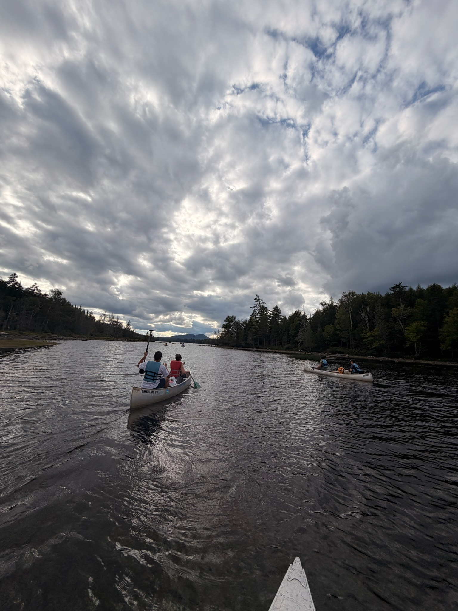

01 · Forked Lake · Adirondacks, New York
A campsite reached
by kayak.
On a recent camping trip to Forked Lake, we loaded our gear into a kayak and paddled to our campsite. Getting there was part of what made the experience so memorable.
A little about this place
At Forked Lake, most campsites are reached by boat or trail rather than by car. Some can only be reached from the water.
Source · New York State DEC ↗